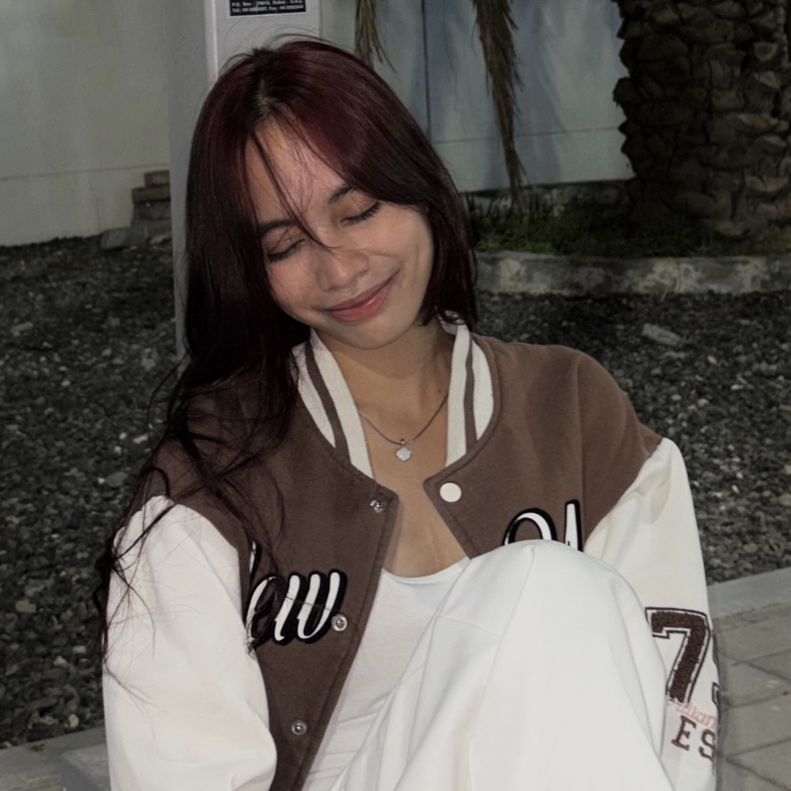

Hello, I'm Darling!
I am a STEM student with a passion for multi-disciplinary learning and leadership. Having explored and led projects in various fields, I thrive on adaptability and continuous growth. Ultimately, my core focus and expertise lie in web design and development. I am dedicated to bridging creative design with technical architecture, using my broad perspectives to build intuitive, impactful digital solutions.
Far Eastern Private School, Halwan / Sharjah, UAE
About me!
Darling Linda Claire B. Cayanan
October 16, 2007 | 18 years old
Driven by a passion for creation and design, I am an 18-year-old STEM student currently studying at Far Eastern Private School. From a young age, I was always experimenting, building, and trying to understand how things worked, whether it involved a science experiment or a mechanical device. That childhood curiosity naturally evolved into a deep interest in innovation and robotics. Competing in various robotics contests has not only accelerated my learning but has also confirmed that building the technology of tomorrow is exactly what I want to do.
Featured Projects
Lead Designer | Safe AI Cup 2026
For the Safe AI Cup 2026, I was chosen as the Lead Designer for AquaKnow—a website designed to help marine biologists easily access and visualize their research data. I was in charge of the overall look, feel, and structure of the site.
- Robotics: Active Robotics Competitor | 3 Years and Counting
- Club Leadership:President of Photography Club
- Media Leadership:Head Photojournalist of Fepsian Torch
- Public Relations: P.R.O of Social Studies Club and Filipino Club
- Finance Leadership: Treasurer of TLE Club
- Administration: Secretary of Kindness Club
Experience & Education:
Skills
Interest
- Web Design & Development
- Crafting intuitive user experiences,translating concepts into code, and blending logic with digital aesthetics.
- Computing & Innovative Robotics
- Exploring hardware engineering, building mechanics, and analyzing how tehcnology solve real-word problems.
- Fashion &Sustainable Design
- Exploring style, garment aesthetics, and the ethical, sustainable future of the fashion industry.
- Visual Arts ( Painting & Drawing )
- Sketching concepts, working with composition, and mastering color theory through both traditional and digital mediums.
- Digital Media & Post-Production
- Editing complex videos and sequences to create engaging, high-level visual story telling.
- Photojournalism & Visual Storytelling
- Capturing impactful moments through photography and using media to document compelling narratives.
- Multi-Disciplinary Exploration
- Actively Learning about unrelated fields from performing arts to writing, to bring unique, well-rounded perspective to everything i create.